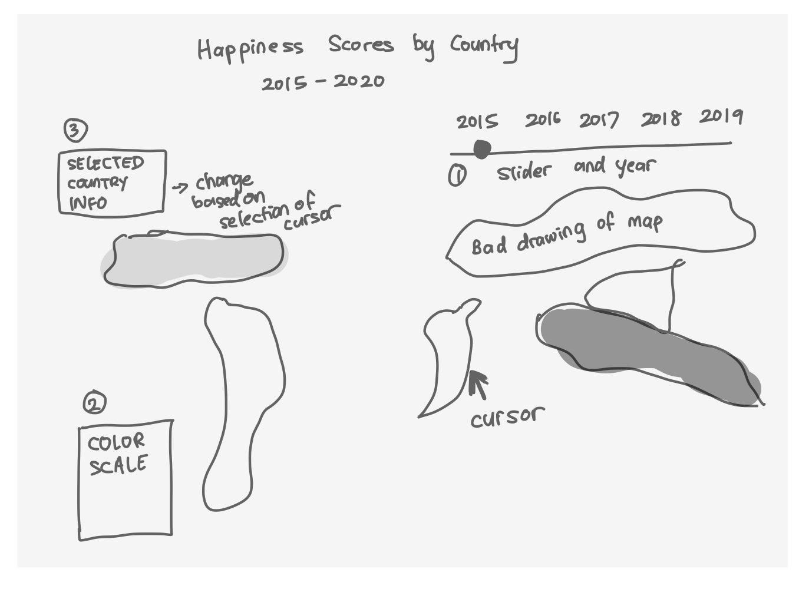
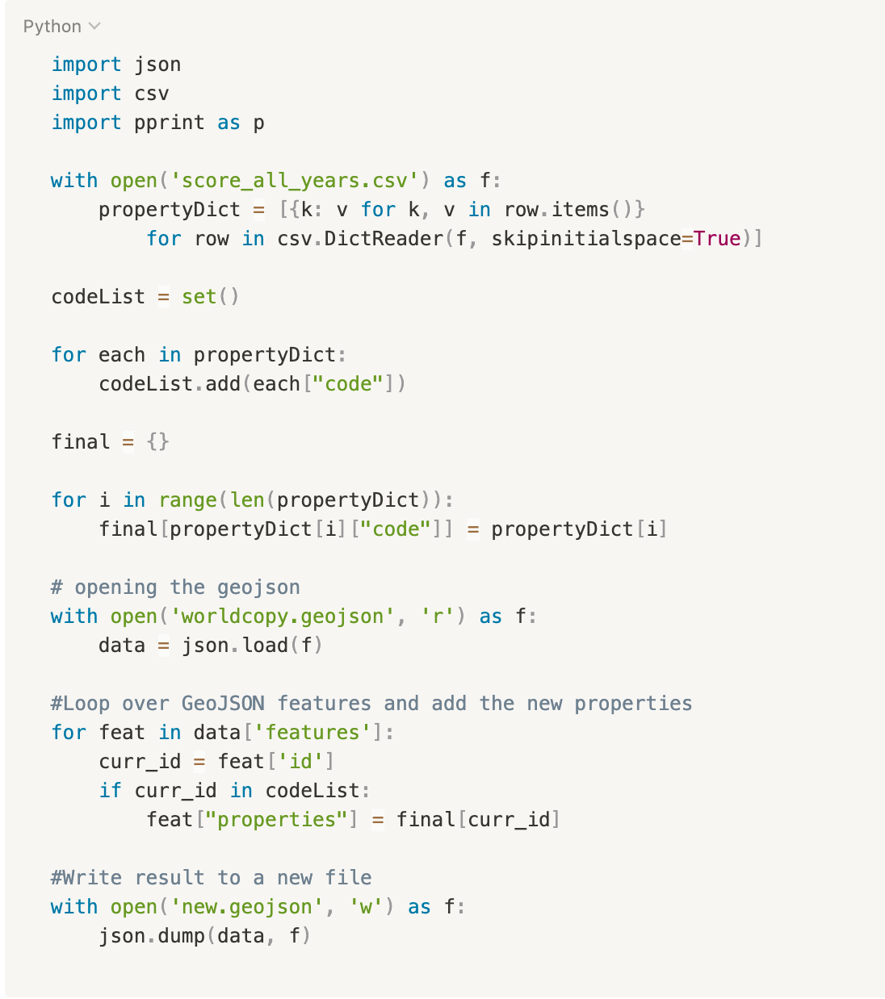

Data Domain
When looking at the dataset as a user only looking at the country, rank and score variables, here are some questions I had:
- Is there an overall worldwide trend in change in happiness scores over the years?
- Are there any patterns regarding happiness scores between the different countries or regions?
- Are tropical countries happier?
- Are people in the US or in Indonesia happier overall? (I’m Indonesian)
- How has Indonesia’s happiness score changed over the years?
Visualization Goals
I also asked a friend to look at it and I noted down the focal points and user needs. Through my visualization, users should be able to:
- Compare scores of a country over the years
- Compare scores of a country and their neighboring regions
- Know what rank a particular country has for that year
- Big picture view of the world’s scores over the years
- Look at the distribution of happiness scores on a map for a particular year
Visualization Features
When looking at the dataset as a user only looking at the country, rank and score variables, here are some questions I had:
- Choropleth Map
- Description
- Map that displays the world map of all countries. Countries will be shaded according to the happiness score
- Requirements
- Needs a way to portray information like country name and rank as well through a tooltip when a specific country is selected to maximize expressiveness of data by using these interactive visualization techniques
- Description
- Slider
- Description
- User can input by sliding the year that they want the data to display on the map. They will be able to compare and contrast the happiness scores of the world map over the years or look at the trend in score for a specific country
- Size
- The slider has to be obvious and has to have a year title so that the user can see what year’s data is currently being displayed
- Position
- The slider should be positioned properly to ensure that it does not get in the way of the map and scale
- Description
- Tooltip
- Description
- The tooltip should be able to have a pop up showing more details of a country when the country is selected. It should show the country name and happiness score and rank for that particular year to convey more information. This is a good use of the interactive visualization technique as it adds another dimension to an otherwise static choropleth map
- Position
- The position of the tooltip could either be dynamic or just be on one side (ex. top left) of the graph. I ended up going with having the tooltip a certain offset away from the current position of the cursor, however this is talked about more in the future work part of this assignment in more detail
- Color change
- During selection or while hovering over a country, I think it makes sense to change the color of the country on selection so that the user knows which segment they are selecting on as boundaries are not always as clear. I decided on yellow as it is distinguishable from blue to show that that is the current selection
- Description
- Legend
- Description
- A legend is needed in order for users to see what approximate score each country has if they are not currently hovering or selecting a country. This would be useful when looking at it through the lens of looking at a world map and the overall distribution of scores rather than for an individual country since for individual ones, the tooltip can be used. This helps make the data easier to digest
- Color
- The color is a singular color in different shades since it is a continuous dataset and is sequential in color scale instead of diverging because there is no midpoint. I decided to do a single hue (range of blues) to show that the darker the blue, the higher the happiness score which through research and asking other classmates, seems intuitive
- Position
- The position of the scale has to be near the map but should not overlap on countries so that it does not mess with the ability for someone to hover over any country they want
- Scale
- The scale is continuous as the scores range from about 2 to 8, and that is reflected on the map. Countries with no scores (unavailable data) is marked very light and the tooltip reveals that the data is unavailable to prevent confusion. The colors are split for each point range so that users can mentally group the countries with similar scores to make it easier for them to read. In a sense, the scores were binned based on their first digit when being encoded in relation to the color scheme
- Description
Storyboard
I then sketched out a storyboard to visualize what I had in my head.
This was the starting point of my visualization before I started coding and using D3.js.

Development Process
I did this assignment in the span of a week and spent around 24 hours on it. Here are the steps I took:
- D3 Research (2 hours)
- I did some research to try to learn more about D3 and the coding conventions and syntax, as well as exploring different interactive visualization techniques that I can use for this assignment. I went with a choropleth map.
- I did some research to try to learn more about D3 and the coding conventions and syntax, as well as exploring different interactive visualization techniques that I can use for this assignment. I went with a choropleth map.
- Dataset selection (30 minutes)
- I went on Kaggle.com to look for interesting datasets and found this one. To narrow down the focus, I used the rank and score variables.
- Ideation (1 hour)
- I thought about the features I wanted to incorporate and created a rough draft through a storyboard to figure out the scope of my project. I am doing this assignment alone, so I had to keep that in mind since I was also new to D3.
- Data cleaning (7 hours)
- There was a lot of data cleaning involved and I had to merge the happiness dataset with the world.geojson for the choropleth map by joining the two through country codes. This was one of the most challenging parts of the project as I had to write a python script to add the ranks and scores as new additional properties of each country.
- Coding the visualization (10 hours)
- This took a very long time as I was learning D3 as I went.
I had to learn how to debug, code in Javascript, and figure out D3 conventions so this took a lot of time.
I read a lot of documentation and learned a lot too.
Here is what my script looks like:

- This took a very long time as I was learning D3 as I went.
I had to learn how to debug, code in Javascript, and figure out D3 conventions so this took a lot of time.
I read a lot of documentation and learned a lot too.
- Write up and wrap up (4 hours)
- The writeup took about 2 hours to complete and I am currently putting together the website for easy access.
Final Visualization
My storyboard looked pretty similar to my final visualization, except that it is now interactive and that the location of the country and happiness data on click is now shown relative to the position of the cursor (on hover) rather than a set position on the top right of the map. This is done so that the user does not have to constantly look away from the cursor to the top left for more information and reduces cognitive overhead. I also did not end up doing a play – pause button due to time constraints, but it definitely is possible to do in the future or if I had more time left.
Reflections
I really enjoyed doing this assignment although the D3 part was frustrating at times. I learned a lot from this project, and this really sparked my interest in data visualization. If I had more time, I definitely would have made a more elaborate and expressive visualization, but I think this is a great D3 trial run for me. I can see how learning D3 can be useful in the future and I now have a better grasp of how to utilize data visualization techniques to ensure that the information you’re conveying is understandable and works as intended. I learned a lot about expressiveness and effectiveness as well.
Future Work
In the future, a zoom feature should be added so users can zoom in and out to or from a particular country or region if they want to. A couple filters such as regions or continents could also be added if users were curious about the aggregate data of a particular region. I also think that it would be cool to add the rankings of the country as an additional visualization or to add the relationships between certain variables that the happiness score is composed of such as GDP per capita, freedom and generosity, maybe in an interactive scatter plot. Another feature is to have information boxes where users can maybe select 2 countries and the information is displayed there and changes as they slide through the years so that they can compare the stats of two countries.